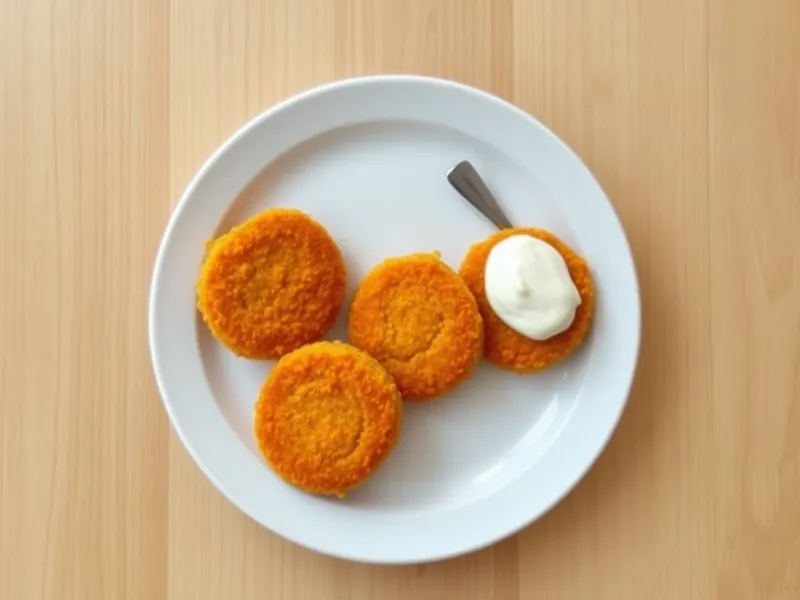

Фото: Иллюстрация ИИ, Cloudflare Workers AI
Морковные котлеты с манкой
Нежные котлеты из тёртой моркови с манкой и яйцом, к ним сметана
30 мин2 порц.564 ккал на порциюБ 16 · Ж 32 · У 52Русская кухня
Открыть в приложении: порции, таймеры, список покупок
Продукты на 2 порц.
- Морковь5 шт
- Яйцо куриное2 шт
- Манная крупа3 ст. л.
- Панировочные сухари3 ст. л.
- Соль1 ч. л.
- Растительное масло2 ст. л.
- Сметана 20%100 г
Как готовить
- Натрите морковь на мелкой тёрке, на это уйдёт 5 минут.
- Смешайте морковь с яйцами, манкой и солью и оставьте на 10 минут, чтобы манка набухла и масса загустела.
- Мокрыми руками сформуйте котлеты толщиной 1,5 см и обваляйте в сухарях.
- Обжарьте в масле на среднем огне по 4 минуты с каждой стороны до румяной корочки, затем накройте крышкой и подержите на слабом огне 3 минуты, чтобы морковь внутри стала мягкой.
- Подавайте со сметаной.
Совет. Если масса слишком жидкая и котлеты не держат форму, добавьте ещё 1 ст. л. манки и подождите 5 минут.